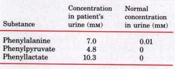
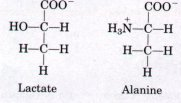
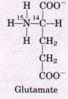
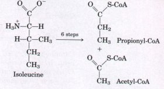
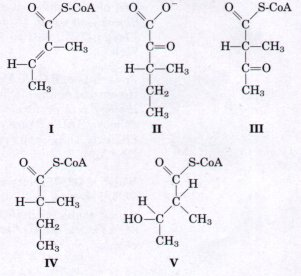
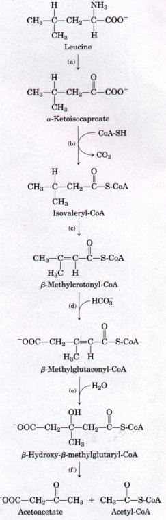

A small fraction of oxidative energy in humans comes from the catabolism of amino acids. Amino acids are derived from the normal breakdown (recycling) of cellular proteins, degradation of ingested proteins, or breakdown of body proteins in lieu of other fuel sources during starvation or in untreated diabetes mellitus. Ingested proteins are degraded in the stomach and small intestine by proteases. Most proteases are initially synthesized as inactive zymogens, which are activated in the stomach or intestine by proteolytic removal of parts of their polypeptide chains. An early step in the catabolism of amino acids is the separation of the amino group from the carbon skeleton. In most cases, the amino group is transferred to α-ketoglutarate to form glutamate. This type of reaction is called a transamination and requires the coenzyme pyridoxal phosphate. Glutamate is transported to liver mitochondria, where an amino group is liberated as ammonia (NH4+ ) by the enzyme glutamate dehydrogenase. Ammonia formed in other tissues is transported to liver mitochondria as the amide nitrogen of glutamine or as the amino group of alanine. Most of the alanine is generated in muscle and transported in the blood to the liver. After deamination the resulting pyruvate is converted to glucose, which is transported back to muscle as part of the glucose-alanine cycle.
Ammonia is highly toxic to animal tissues. Ammonotelic animals (bony fishes, tadpoles) excrete amino nitrogen from their gills as ammonia. Ureotelic animals (adult terrestrial amphibians and all mammals) excrete amino nitrogen as urea, formed in the liver by the urea cycle. Arginine is the immediate precursor of urea. Arginase hydrolyzes arginine to yield urea and ornithine, and arginine is resynthesized in the urea cycle. Ornithine is converted to citrulline at the expense of carbamoyl phosphate, and an amino group is transferred to citrulline from aspartate, re-forming arginine. Ornithine is regenerated in each turn of the cycle. Several of the intermediates and byproducts of the urea cycle are also intermediates in the citric acid cycle, and the two cycles are thus interconnected. The activity of the urea cycle is regulated at the levels of enzyme synthesis and allosteric regulation of the enzyme that forms carbamoyl phosphate. Uricotelic animals (birds and reptiles) excrete amino nitrogen in semisolid form as uric acid, a derivative of purine. The mode of nitrogen excretion is determined by habitat. The formation of the nontoxic urea and of solid uric acid has a high ATP cost. Genetic defects in enzymes of the urea cycle can be compensated for by dietary regulation.
After removal of amino groups by transamination to α-ketoglutarate, the carbon skeletons of amino acids undergo oxidation to compounds that can enter the citric acid cycle for oxidation to CO2 and H2O. In these pathways, the cofactors tetrahydrofolate and S-adenosylmethionine facilitate one-carbon transfer reactions, and the cofactor tetrahydrobiopterin facilitates the oxidation of phenylalanine catalyzed by phenylalanine hydroxylase. There are five intermediates through which carbon skeletons of amino acids enter the citric acid cycle: (1) acetyl-CoA, (2) α-ketoglutarate, (3) succinylCoA, (4) fumarate, and (5) oxaloacetate. The amino acids producing acetyl-CoA are divided into two groups. Alanine, cysteine, glycine, tryptophan, and serine yield acetyl-CoA via pyruvate; leucine, lysine, phenylalanine, tyrosine, and tryptophan yield acetyl-CoA via acetoacetyl-CoA. Isoleucine, leucine, and tryptophan also form acetyl-CoA directly. Proline, histidine, arginine, glutamine, and glutamate enter the citric acid cycle via α-ketoglutarate; threonine, methionine, isoleucine, and valine enter via succinyl-CoA; four carbon atoms of phenylalanine and tyrosine enter via fumarate; and asparagine and aspartate enter via oxaloacetate. The branched-chain amino acids (leucine, isoleucine, and valine), unlike the other amino acids, are degraded in extrahepatic tissues. A number of serious human diseases can be traced to genetic defects in specific enzymes in the pathways of amino acid catabolism.
Some amino acids can be converted to ketone bodies; some can be converted to glucose.
General
Bender, D.A. (1985) Amino Acid Metabolism, 2nd edn, Wiley-Interscience, Inc., New York.
Campbell, J.W. (1991) Excretory nitrogen metabolism. In Environmental and Metabolic Animal Physiology, 4th edn (Prosser, C.L., ed), pp. 277324, John Wiley & Sons, Inc., New York.
Mazelis, M. (1980) Amino acid catabolism. In The Biochemistry of Plants: A Comprehensive Treatise (Stumpf, P.K. & Conn, E.E., eds), Vol. 5: Amino Acids and Derivatives (Miflin, B.J., ed), pp. 541567, Academic Press, Inc., New York.
A discussion of the various fates of amino acids in plants.
Mehler, A. (1992) Amino acid metabolism I: general pathways; Amino acid metabolism II: metabolism of the individual amino acids. In Textbook of Biochemistry with Clinical Correlations, 3rd edn (Devlin, T.M., ed), pp 475-528, Wiley-Liss, New York.
Powers-Lee, S.G. & Meister, A. (1988) Urea synthesis and ammonia metabolism. In The Liver: Biology and Pathobiology, 2nd edn (Arias, I.M., Jakoby, W.B., Popper, H., Schachter, D., & Shafritz, D.A., eds), pp. 317-329, H,aven Press, New York.
Walsh, C. (1979) Enzymatic Reaction Mechanisms, W.H. Freeman and Company, San Francisco. Agood source for in-depth discussion of the classes of enzymatic reaction mechanisms described in the chapter.
Amino Group Metabolism
Christen, P. & Metzler, D.E. (1985) Transaminases, Wiley-Interscience, Inc., New York.
The Urea Cycle
Holmes, F.L. (1980) Hans Krebs and the discovery of the ornithine cycle. Fed. Proc. 39, 216-225.
A medical historian reconstructs the euents leading to the discovery ofthe urea cycle.
Kirsch, J.F., Eichele, G., Ford, G.C., Vincent, M.G., Jansonius, J.N., Gehring, H., & Christen, P. (1984) Mechanism of action of aspartate aminotransferase proposed on the basis of its spatial structure. J. Mol. Biol. 174, 497-525.
Disorders of Amino Acid Degradation
Ledley, F.D., Levy, H.L., & Woo, S.L.C. (1986) Molecular analysis of the inheritance of phenylketonuria and mild hyperphenylalaninemia in families with both disorders. N. Engl. J. Med. 314, 1276-1280.
Nyhan, W.L. (1984) Abnormalities in Amino Acid Metabolism in Clinical Medicine, AppletonCentury-Crofts, Norwalk, CT.
Scriver, C.R., Kaufman, S., & Woo, S.L.C. (1988) Mendelian hyperphenylalaninemia. Annu. Rev. Genet. 22, 301-321.
Stanbury, J.B., Wyngaarden, J.B., Fredrickson, D.S, Goldstein, J.L., & Brown, M.S. (eds) (1983) The Metabolic Basis of Inherited Disease, 5th edn, Part 3: Disorders of Amino Acid Metabolism, McGraw-Hill Book Company, New York.
1. Products of Amino Acid Transamination Draw the structure and give the name of the α-keto acid resulting when the following amino acids undergo transamination with α-ketoglutarate:
(a) Aspartate
(c) Alanine
(b) Glutamate
(d) Phenylalanine
2. Measurement of the Alanine Aminotransferase Reaction Rate The activity (reaction rate) of alanine aminotransferase is usually measured by including an excess of pure lactate dehydrogenase and NADH in the reaction system. The rate of alanine disapperance is equal to the rate of NADH disappearance measured spectrophotometrically. Explain how this assay works.
3. Distribution of Amino Nitrogen If your diet is rich in alanine but deficient in aspartate, will you show signs of aspartate deficiency? Explain.
4. A Genetic Defect in Amino Acid Metabolism: A Case History A two-year-old child was brought to the hospital. His mother indicated that he vomited frequently, especially after feedings. The child's weight and physical development were below normal. His hair, although dark, contained patches ot white. A urine sample treated with ferric chloride (FeCl3) gave a green color characteristic of the presence of phenylpyruvate. Quantitative analysis of urine samples gave the results shown in the table below.

(a) Suggest which enzyme might be deficient. Propose a treatment for this condition.
(b) Why does phenylalanine appear in the urine in large amounts?
(c) What is the source of phenylpyruvate and phenyllactate? Why does this pathway (normally not functional) come into play when the concentration of phenylalanine rises?
(d) Why does the patient's hair contain patches of white?
5. Role of Cobalamin in Amino Acid Catabolism Pernicious anemia is caused by impaired absorption of vitamin B12. What is the effect of this impairment on the catabolism of amino acids? Are all amino acids affected equally? (Hint: See Box 16-2.)

6. Lactate uersus Alanine as Metabolic Fuel: The Cost o f Nitrogen Removul The three carbons in lactate and alanine have identical states of oxidation, and animals can use either carbon source as a metabolic fuel. Compare the net ATP yield (moles of ATP per mole of substrate) for the complete oxidation (to CO2 and H2O) of lactate versus alanine when the cost of nitrogen excretion as urea is included.7. Pathway of Carbon and Nitrogen in Glutamate Metabolism When [2-14C,15N]glutamate undergoes oxidative degradation in the liver of a rat, in which atoms of the following metabolites will each isotope be found?

(a) Urea
(d) Citrulline
(b) Succinate
(e) Ornithine
(c) Arginine
(f) Aspartate
8. Chemical Strategy of Isoleucine Catabolism Isoleucine is degraded by a series of six steps to propionyl-CoA and acetyl-CoA:


(a) The chemical process of isoleucine degradation consists of strategies analogous to those found in the citric acid cycle and the β oxidation of fatty acids. The intermediates involved in isoleucine degradation (I to V) shown below are not in the proper order. Use your knowledge and understanding of the citric acid cycle and β-oxidation pathway to arrange the intermediates into the proper metabolic sequence for isoleucine degradation.
(b) For each step proposed above, describe the chemical process, provide an; analogous example from the citric acid cycle or β-oxidation pathway, and indicate any necessary cofactors.
9. Ammonia Intoxication Resulting from an Arginine-Deficient Diet .In a study conducted some years ago, cats were fasted overnight then given a single complete in amino acids but without arginine: Within 2 h, blood ammonia levels increased from a normal level of 18 μg/L to 140 μg/L, and the cats showed the clinical symptoms of ammonia toxicity. A control group fed a complete amino acid diet or an amino acid diet in which arginine was replaced by ornithine showed no unusual clinical symptoms.
(a) What was the role of fasting in the experiment?
(b) What caused the ammonia levels to rise? Why did the absence of arginine lead to ammonia toxicity? Is arginine an essential amino acid in cats? Why or why not?
(c) Why can ornithine be substituted for arginine?
10. Oxidcction of Glutamate Write a series of balanced equations and the net reaction describing the oxidation of 2 mol of glutamate to 2 mol of aketoglutarate plus 1 mol of excreted urea.
11. The Role of Pyridoxal Phosphate in Glycine Metabolism The enzyme serine hydroxymethyl transferase (Fig. 17-23) requires a pyridoxal phosphate cofactor. Propose a mechanism for this reaction that explains the requirement. (Hint: See Fig. 17-7. )
| 12. Parallel Pathways for Amino Acid and
Fatty Acid Degradation The carbon skeleton of leucine is
degraded by a series of reactions (at right) closely
analogous to those of the citric acid cycle and fatty
acid oxidation. For each reaction, indicate its type,
provide an analogous example from the citric acid cycle
or β-oxidation pathways, and indicate any necessary
cofactors. 13. Transamination and the Urea Cycle Aspartate aminotransferase has the highest activity of all the mammalian liver aminotransferases. Why? 14. The Case against the Liquid Protein Diet A weight-reducing diet heavily promoted some years ago required the daily intake of "liquid protein" (soup of hydrolyzed gelatin), water, and an assortment of vitamins. All other food and drink were to be avoided. People on this diet typically lost 10 to 14 lb in the first week.
15. Alanine and Glutamine in the Blood Blood plasma contains all the amino acids required for the synthesis of body proteins, but they are not present in equal concentrations. Two amino acids, alanine and glutamine, are present in much higher concentrations in normal human blood plasma than any of the other amino acids. Suggest possible reasons for their abundance. |
 |